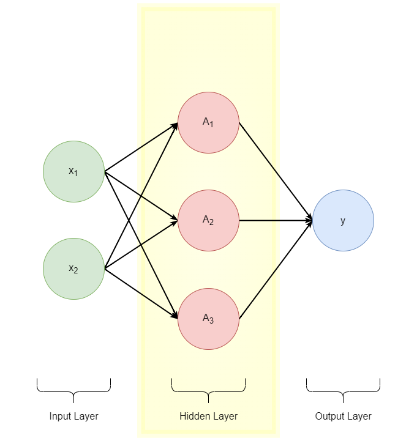

Understanding Neural Networks
Contents
Understanding Neural Networks#
Author: Dominick DeCanio
from IPython.display import Image, HTML
import pandas as pd
#path = "C:/Users/Dom/Desktop/edu/MSDS/fall_22/ds_6030/project"
Introduction#
Every day we interact with the world through our senses. When we wake up, we see the sunlight of the morning, we hear the birds chirping, and taste hot coffee. We rely on these sensory inputs to inform our decisionmaking, though this process is often taken for granted. When you get out of bed to put on a fresh cup of coffee, you might not realize that you have already made various decisions before you’ve started the coffee maker: retrieving coffee grounds from your cabinet requires you to decide which cabinet to open, opening your bedroom door requires you to acknowledge your doorknob’s location on your door, and getting out of bed requires that you look at the clock to convince yourself that you really have to wake up now.
Let’s work with a specific example: Consider this cat picture.

Source: https://commons.wikimedia.org/wiki/Category:Quality_images_of_cats#/media/File:Топа_8.jpg
{kind=link}
When you look at this picture of the cat, you can see that it is cute. Just as before, this is a decision we collectively arrive at after processing the stimulus of this image, a sensory input. To better understand our the subliminal decision-making processes that are required to come to such a conclusion, let us proceed through a set of questions to investigate how this decision was formed.
Why do you think this cat is cute?
The cat’s fur coloring is pretty
Why do you think the cat’s fur coloring is pretty?
The cat’s fur coloring is pretty because it has distinct colors of orange, white, and black.
Why do these features make the cat’s fur coloring pretty?
The distinct nature of the colors allows them to be more vibrant
Why does color vibrance make the cat’s fur coloring pretty?
Vibrant colors are pretty
Why are vibrant colors * pretty?
Vibrant colors are pretty
Notice that underlying our conclusion was a series of decisions and observations that were intertwinded to form a foundation for this conclusion. In this specific example, the root of the conclusion that the cat is cute is that vibrant colors are pretty, and therefor because the cat has vibrant colors in its fur, it is pretty too.
It is easy to image, however, that each of these questions has multiple answers. Infrequently do base conclusions on one component of an observation. Rather, our responses to stimuli tend to utilize multiple components of the stimulus in our decision.
Let’s proceed with the limitation that each question has 3 answers, and see what happens when we apply this assumption to the example above. Of course in reality such questions might have greater or less than 3 answers, and some answers might be the same.
Why do you think this cat is cute?
The cat’s fur coloring is pretty
The cat looks surprised
The cat’s nose is cute
Why do you think the cat’s fur coloring is pretty?
The cat’s fur coloring is pretty 1. The cat’s fur coloring is pretty because the colors are distinct 2. The cat’s fur colors form a cool pattern 3. The cat’s fur has multiple colors
The cat looks surprised
The cat’s nose is cute
Why do these features make the cat’s fur coloring pretty?
The cat’s fur coloring is pretty
The cat’s fur coloring is pretty because the colors are distinct
The colors are vibrant
The colors contrast well
Each color is rich
The cat’s fur colors form a cool pattern
The cat’s fur has multiple colors
The cat looks surprised
The cat’s nose is cute
This representation of the problem is getting a little hard to read - and there are many questions left unaswered because we have not answered all questions to the same depth. To understand the problem more concisely, we can rewrite these answers in tree diagram, with each box representing an answer and each line representing a question.

We can see that our interpretation of the image relies on many small details of that image coming together to form an overall decision.
Note
We chose to ask 3 questions of every conclusion we came to when deciding that “this cat is cute”. This is an arbitrary choice, and thus we might ask an arbitrary number of questions of such a conclusion, resulting in an arbitrarily large number of variables.
Data such as images and strings of words are commonly callled unstructured data because their most granular level of information is unlabeled. In an image, this “most granular level of information” is a pixel. Although this pixel has one or more values representing the hue of RGB that the pixel shows, the meaning or value of this pixel’s hue is not labeled-instead, it must be infered from the significance of that pixel’s color in the context of its location in the overall image.
Because a single “input” of unstructured data (e.g. an image) contains many sub-components (e.g. pixels) that must be analyzed in conjunction with one another, we
Neural Network Motivation#
To create models that understand unstructured data a such as images, and other complex data, we must mimic this structure of decomoposing the input into it’s components and analyzing the interactions between these subparts (using many distinc linear combinations) before combining them to reach a conclusion. Generally, we might choose an arbitrary number of supporting variables to define any predictor variable in the feature space, dependent on the specific research question.
The point of this decomposition is to use the different coefficient combinations to understand the inputs in different ways. These various combinations of coefficients allow us to isolate clusters oof inputs based on different characteristics of the features.
We will work through this concept generally before introducing an example later in this section. In the following equations, focus on the coefficients and do not be too concerned with the interpretations of the variables.
Generally:
\( x = x_{1} + x_{2} \) (inputs)
\( y_{1} = \beta_{y_{1},0} + \beta_{y_{1},1}x_{1} + \beta_{y_{1},2}x_{2} \) (linear combination 1)
\( y_{2} = \beta_{y_{2},0} + \beta_{y_{2},1}x_{1} + \beta_{y_{2},2}x_{2} \) (linear combination 2)
\( z = \beta_{y0} + \beta_{y_{1}}y_{1} + \beta_{y_{2}}y_{2} \) (conclusion)
\( z = \beta_{y0} + \beta_{y_{1}}(\beta_{y_{1},0} + \beta_{y_{1},1}x_{1} + \beta_{y_{1},2}x_{2}) + \beta_{y_{2}}(\beta_{y_{2},0} + \beta_{y_{2},1}x_{1} + \beta_{y_{2},2}x_{2}) \) (expanded conclusion)
As we can see, the presence of two (2) distinct linear combinations of the subparts of the input allows us to analyze the input in tow different ways simultaneously. Because these linear combinations come together to form the overall conclusion statement, we can also weight these linear combinations based on their predictive power in determining the conclusion.
Thus, both the weights of the inputs within these linear combinations (\( \beta_{y_{1},0} , \beta_{y_{1},1}, \beta_{y_{1},2}, \beta_{y_{2},0} , \beta_{y_{2},1} , \beta_{y_{2},2} \)) and the weights of the linear combinations on the conclusion (\( \beta_{y_{1}} , \beta_{y_{2}} \)) have different meanings and are independently influential in the conclusion. If preserved, these terms allow us to identify clusters of observations based on various sub-components of the inputs because the different linear combinations draw out different characteristics of these sub-components. Because of this, we want to preserve the independece of these terms in order to preserve the deepest level of this analysis.
However! These coefficients will collapse.
(distributing the \(\beta_{y_{1}}\) and \(\beta_{y_{2}}\) coefficients)
\( z = \beta_{y0} + (\beta_{y_{1}}\beta_{y_{1},0} + \beta_{y_{1}}\beta_{y_{1},1}x_{1} + \beta_{y_{1}}\beta_{y_{1},2}x_{2}) + (\beta_{y_{2}}\beta_{y_{2},0} + \beta_{y_{2}}\beta_{y_{2},1}x_{1} + \beta_{y_{2}}\beta_{y_{2},2}x_{2}) \)
We can see that this can be rewritten:
\( z = (\beta_{y0} + \beta_{y_{1}}\beta_{y_{1},0} + \beta_{y_{2}}\beta_{y_{2},0}) + (\beta_{y_{1}}\beta_{y_{1},1}x_{1} + \beta_{y_{1}}\beta_{y_{1},2}x_{2}) + (\beta_{y_{2}}\beta_{y_{2},1}x_{1} + \beta_{y_{2}}\beta_{y_{2},2}x_{2}) \)
Grouping based on the input variables:
\( z = (\beta_{y0} + \beta_{y_{1}}\beta_{y_{1},0} + \beta_{y_{2}}\beta_{y_{2},0}) + (\beta_{y_{1}}\beta_{y_{1},1}x_{1} + \beta_{y_{2}}\beta_{y_{2},1}x_{1}) + (\beta_{y_{1}}\beta_{y_{1},2}x_{2} + \beta_{y_{2}}\beta_{y_{2},2}x_{2}) \)
Now we will pull out the variables \(x_{1}\) and \(x_{2}\):
\( z = (\beta_{y0} + \beta_{y_{1}}\beta_{y_{1},0} + \beta_{y_{2}}\beta_{y_{2},0}) + x_{1}(\beta_{y_{1}}\beta_{y_{1},1} + \beta_{y_{2}}\beta_{y_{2},1}) + x_{2}(\beta_{y_{1}}\beta_{y_{1},2} + \beta_{y_{2}}\beta_{y_{2},2}) \)
We can rename:
\( \beta_{0} = \beta_{y0} + \beta_{y_{1}}\beta_{y_{1},0} + \beta_{y_{2}}\beta_{y_{2},0} \)
\( \beta_{x_{1}} = \beta_{y_{1}}\beta_{y_{1},1} + \beta_{y_{2}}\beta_{y_{2},1} \)
\( \beta_{x_{2}} = \beta_{y_{1}}\beta_{y_{1},2} + \beta_{y_{2}}\beta_{y_{2},2} \)
Therefore:
\( z = \beta_{0} + \beta_{x_{1}}x_{1} + \beta_{x_{2}}x_{2}\)
Wait! What happened?
We can see that our set of 8 independently influential coefficients have been reduced to only 3. This fundementally destroys our ability to form clusters based on multiple sub-features because we are unable to analyze the inputs in multiple (disparate) ways.
How can we prevent these coefficients from collapsing into fewer-less granular-coefficients?
Overview#
An artificial neural network (ANN) is a model which mimics the human brain (to some degree) in order to process complex inputs. The key to a functional artificial neural network is the introduction of nonlinearity in order to preserve the information added though creating multiple linear combinations of the inputs using different coefficients. This nonlinearity prevents the linear equations from collapsing, though it adds complexity that makes interpretation of the network more difficult.
These models rely on linear combinations of inputs, and nonlinear transformations of these funcitons, to process and make conclusions on complex inputs. The similarities between brain models and ANNs diverged soon after ANNs were created, and the architectures of modern ANNs do not resemble contemporary understanding of the brain. As these networks developed, and the differences between biological and artificial neural networks became well established, the convention of specifying the network as “artificial” became less necessary. Now, an artificial neural networks is known as simply a neural network (NN) and will be referred to as such throughout this article.
There are many good resourses that describe neural network architectures and their applications. Neural networks are difficult to interpret. Because of this, it seems, many resources do not cover the foundations of neural network interpretation as the limited applicability of this topic may make it a less interesting and useful to readers. The aim of this article is to explore the foundations of neural networks that:
provides intuition of neural network architecture
informs the reader of pitfalls of neural network interpretation
is rooted in the underlying mathematics of these networks
The intended audience of this article is a graduate student, advanced undergraduate student or independent learner who has some familiarity with linear algebra, statistics, and neural network architecture but lacks an intuitive understanding of these networks.
Example#
Snack Example
We live in a world where there are two types of snacks (pretzels and corn chips) which are each composed of wheat and corn.
{kind=link}
Each pretzel is made using 4 wheat and 1 corn, and each corn chip is made using 1 wheat and 4 corn.
snack |
wheat |
corn |
|---|---|---|
pretzel |
4 |
1 |
corn chip |
1 |
4 |
In this world there are two types of snack packets; one containing only pretzels, and the other containing only corn chips.
You might then think to yourself:
Why don’t we simply use another modeling framework such as ordinary least squares (OLS)? Can’t OLS understand the imacts of different predictors on the predicted value?
Sadly, no.
When a linear function is used to evaluate a set of features that are linearly related, the lower level features are obscured as the greater linear function collapses into a simplified linear function. We will use the snacks example to illustrate how a linear approach to a decomposition of features collapses, rendering the added data of these granular features useless.
Let’s begin by recalling the Ordinary Least Squares formula for a simple linear regression.
Ordinary Least Squares (OLS) equation:
\( y = \beta_{0} + \beta_{1}x + \epsilon \)
Note
We move directly to the solution of the ordinary least squares approach. In doing so we have bruhsed some complexity under the rug, but we can move forward without defining this ordinary least squares foruma thoroughly because we only require that the resulting formula is a linear combination of its features to illustrate this point clearly. We do not require Best Linear Unbiased Estimator (BLUE) properties in this situation.
We will now apply the OLS framework to the snack example to see how a linear combination of linear features collapses. First, we will define the OLS regression model for understanding
image (all mixed)#
Representing this example using the OLS approach, our two input variables will be:
\(x_{1}\) = wheat
\(x_{2}\) = corn
Which yeilds:
\( y = \beta_{0} + \beta_{1}x_{1} + \beta_{2}x_{2} + \epsilon_{x} \)
Let’s pause for a moment to understand what this equation means. We saw from the definition of this example that a snack is comprised of inputs wheat and corn. When applied in the correct ratios these inputs can produce snacks of two distinct varieties.
To undersand this equation we must first understand the context of its prediction. The predicted variable is a snack score. This score is a way for us to differentiate between the two snack types, and it is unitless because it defines neither the type of ingredients that comprise it, nor the type of snack that it represents. Because we are taking units of the ingredients as inputs (one gram of wheat/corn) the coefficients to these variables may be thought of as modifying the importance of the ingredient on the snack score. The intercept term can be interpretted as the base snack score when there are zero grams of wheat and zero grams of corn present, and the error term (epsilon) represents the random variation of snack score caused by variations in the measurement of the ingredients.
Although the snack score does not difinitively identify a specific snack, snacks of the same type will have the same snack score. If we relax the assumption that all snacks of the same type will have the exact same quanitity of each ingredient, we will still see that the the quantities of each ingredient will be similar within each snack type. In both of these situations, we will input the ingredients and output snack scores which can be clustered based on the type of of the underlying snack.
We might then choose a threshold value between these clusters to transform a predicted snack score into a prediction of the class to which the underlying snack belongs. Let’s work through the given OLS example:
\( y \) = snack score
\( \beta_{x0} = 0 \)
\( \beta_{x1} = -0.5 \)
\( \beta_{x2} = 0.5 \)
\( \epsilon_{x} = 0 \)
\( y = \beta_{x0} + \beta_{x1}x_{1} + \beta_{x2}x_{2} + \epsilon_{x} \)
\( y = 0 + -.5x_{1} + .5x_{2} + 0 \)
One Pretzel:
\( y = 0 + -0.5x_{1} + 0.5x_{2} + 0 \)
\( y = 0 + -0.5(4) + 0.5(1) + 0 \)
\( y = -2 + .5 \)
\( y = -1.5 \)
One Corn Chip:
\( y = 0 + -0.5x_{1} + 0.5x_{2} + 0 \)
\( y = 0 + -0.5(1) + 0.5(4) + 0 \)
\( y = -.5 + 2 \)
\( y = 1.5 \)
Given these snack scores, we might choose a threshold value of 0. When using this OLS approach to predict the snack type based on its ingredients we will classify the snack as a “pretzel” when the snack score is less than zero and as a “corn chip” when the snack score is greater than zero.
Note
The values of \(\beta_{0}\) and \(\epsilon\) are not influential here beacuse we are interested in the difference of the snack score (\(y\)) between observations of pretzels and corn chips. Therefore, the intercept and error term can be any values, as they will simply shift the center of these clusters.
The values of the coefficients of \(x_{1}\) and \(x_{2}\) must have different signs, otherwise the snack score (\(y\)) of both pretzels and corn chips will be the same. This phenomena occurs because each snack has only teo ingredients and the same total amount of ingredients. Therefore only on of \(x_{1}\) or \(x_{2}\) is necessary to determine the difference between clusters because the quanitity of one ingredient describes the proportion of the snack that is comprised of both.
Snack Example
Our question of interest is: “What type of snack packet do we have?”
In order to answer this question using the OLS approach, we will set a threshold value and predict using a base case. To maintain a grounding in the interpretation of this approach, we will expand on the approach’s interpretation as it develops.
Recall that this example begins with a pile of ingredients
Now that we have described the application of OLS to the snack problem for classifying each snack, we can build on this foundation to desccribe the full problem. We will proceed by describing the model that will use this OLS classification framework to make a prediction of the snack packet type rather than the snack type.
pile of pretzels / corn chips#
Representing this example using the OLS approach, our two input variables will be:
\(y_{1}\) = pretzel
\(y_{2}\) = corn chip
Which yeilds:
\( z = \beta_{y0} + \beta_{y1}y_{1} + \beta_{y2}y_{2} + \epsilon_{y} \)
We will proceed by extending the snack score concept to a snack packet score, which we will use to describe clusters of snacks within a snack packet. This score will not define a snack packet class, but snack packets of the same type will form clusters which we can then identify using our prior knowledge of the snack packet compositions. Then we will choose a threshold value between these clusters to transform predicted snack scores into a prediction of the class to which the underlying snack packet belongs. The error term at this level is denoted as \(\psi\) for notational clarity.
We will mirror the structure of the snack score OLS example. The only difference between them is that we are now using snack quantities as our input and packet score as our output. Let’s work through the OLS example:
\( z \) = snack packet score
\( \beta_{y0} = 0 \)
\( \beta_{y1} = -0.5 \)
\( \beta_{y2} = 0.5 \)
\( \epsilon_{y} = 0 \)
\( z = \beta_{y0} + \beta_{y1}y_{1} + \beta_{y2}y_{2} + \epsilon_{y} \)
\( z = 0 + -.5y_{1} + .5y_{2} + 0 \)
One Pretzel Packet:
\( z = 0 + -0.5y_{1} + 0.5y_{2} + 0 \)
\( z = 0 + -0.5(10) + 0.5(0) + 0 \)
\( z = -5 + 0 \)
\( z = -5 \)
One Corn Chip Packet:
\( z = 0 + -0.5y_{1} + 0.5y_{2} + 0 \)
\( z = 0 + -0.5(0) + 0.5(10) + 0 \)
\( z = 0 + 5 \)
\( z = 5 \)
Given these snack packet scores, we might choose a threshold value of 0. When using this OLS approach to predict the snack packet type based on its ingredients we will classify the snack packet as a “pretzel packet” when the snack score is less than zero and as a “corn chip packet” when the snack packet score is greater than zero.
Snack Example
We have determined clusters of snacks in order to predict what type of snack is present. Now that we have predicted which snack is present, we want to make a decision on the type of snack packet we have using this information.
Note
The snack score and snack packet score are two distinct levels of the same problem.
Now that we have defined the snack example problem in terms of a snack score and snack packet score, we will try to combine these approaches to form a decomposition approach that uses OLS to predict a snack packet directly from the ingredients we take as inputs.
Snack Example
Recall
Ordinary Least Squares (OLS) equation:
\( y = \beta_{0} + \beta_{1}x + \epsilon \)
Snack Score:
\( y = \beta_{x0} + \beta_{x1}x_{1} + \beta_{x2}x_{2} + \epsilon_{x} \)
Snack Packet Score:
\( z = \beta_{y0} + \beta_{y1}y_{1} + \beta_{y2}y_{2} + \epsilon_{y} \)
Combined approach:
\( z = \beta_{y0} + \beta_{y1}(\beta_{x0} + \beta_{x1}x_{1} + \beta_{x2}x_{2} + \epsilon_{x}) + \beta_{y2}(\beta_{x0} + \beta_{x1}x_{1} + \beta_{x2}x_{2} + \epsilon_{x}) + \epsilon_{y} \)
Neural Network Design#
The following diagram shows a single layer neural network (a neural network with only one hidden layer) that has two inputs and one output.

If you have worked with neural networks before, you have almost certainly seen a diagram like this used to explain what is going on underneath the hood. The aim of the following sections is to systematically break down this diagram to explain its components, using the snack example to form an intuitive understanding of what these bubbles represent.
Input Layer#
The input layer of a neural network can vary in dimension based on the problem of interest. For an image, this can be a matrix of numbers, each representing a single pixel value. This layer maintains the originall units of the inputs, because it represents the inputs before any transformations have been applied.
We will move on to the Snack example to illlustrate this layer in context.
Snack Example
text
inside snack example admonition#
Output Layer#
Snack Example
text